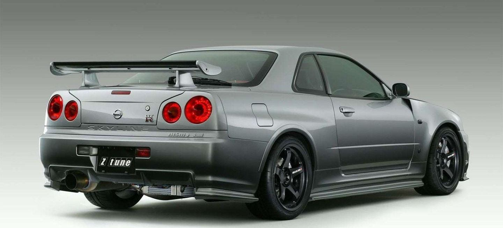
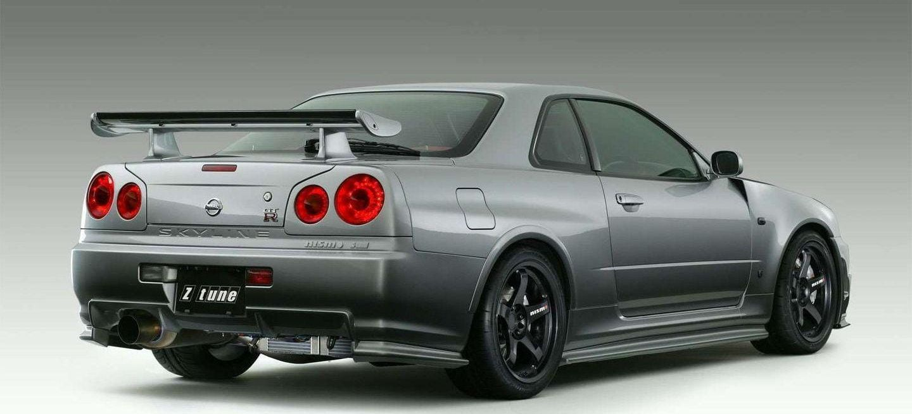

GTR r34
El Nissan Skyline es un modelo de automóvil japonés que se ha producido en distintas versiones ininterrumpidamente desde 1957. Sería tras la fusión de los fabricantes Prince y Nissan, cuando comenzó a comercializarse con este nombre. Hasta 1968 se produjeron dos versiones, el Nissan A200GT y el Prince A200GT, que simplemente se diferenciaban por sus nombres.
Historia
El GT-R R34 fue vendido en el mercado japonés desde 1999 hasta 2002, año en que fue detenida completamente su producción. Seguía equipando el mismo motor RB26DETT de las 2 generaciones anteriores, pero se había construido un chasis más rígido para soportar mejor la torsión, se habían mejorado los frenos, las suspensiones y toda la parte electrónica se había rediseñado, creando el sistema ATTESA-ETS (Sistema de Ingeniería de Tracción Total Avanzada para Todo Terreno) y un sistema HICAS completamente nuevos. Además, su equipamiento contaba con monitor en el salpicadero con información de diferentes parámetros, como la presión de soplado de los turbos, la temperatura del aceite o un medidor de fuerzas G. Durante este periodo el modelo fue varias veces mejorado y evolucionado, creándose así coches cada vez más competitivos.
Apariencia
 
